👆 이 내용은 버튼 따라 하는 실습으로도 있어요. 처음이라면 실습으로 직접 해 보고, 이 글은 복습할 때 보세요. 실습 시작하기 →
※ 글 속 그림은 따라 하기 쉽도록 그린 예시입니다. 실제 화면과 모양이 조금 다를 수 있어요.
Claude Code가 뭔가요?
컴퓨터에게 말로 일을 시키는 AI 비서입니다. "이 폴더 파일 정리해줘", "이 엑셀 파일 월별로 합계 내줘"처럼 평소 말투로 부탁하면, 파일을 직접 만들고 고쳐 줍니다.
0. 먼저 준비할 것 — 유료 Claude 계정
- 인터넷 창에서 claude.ai 에 들어가 가입합니다.
- 로그인한 뒤 화면의 업그레이드 메뉴에서 Pro 이상 요금제를 구독합니다.
1. 연습용 폴더 만들기
처음에는 아무 파일도 없는 빈 폴더에서 연습하는 것이 안전합니다.
- 바탕화면의 빈 곳에 마우스 오른쪽 버튼을 누릅니다.
- 새로 만들기 → 폴더를 누릅니다. (Mac은 새로운 폴더)
- 폴더 이름을 연습으로 정합니다.
2. 설치하기 (Windows)
Mac을 쓰신다면 아래 Mac 설치로 건너뛰세요.
- 키보드 왼쪽 아래 ⊞ Windows 키를 누릅니다.
- powershell 이라고 입력합니다.
- 목록에 나온 Windows PowerShell을 누릅니다. 파란색 또는 검은색 창이 열립니다.
- 아래 상자의 복사 버튼을 누릅니다.
- 열린 창을 한 번 클릭하고, Ctrl+V 로 붙여 넣은 뒤 Enter 를 누릅니다.
irm https://claude.ai/install.ps1 | iex글자가 한참 지나가다가 멈추면 설치가 끝난 것입니다. 창을 닫아 주세요.
2. 설치하기 (Mac)
- ⌘ Command+Space 를 함께 누릅니다.
- 터미널 이라고 입력하고 Enter 를 누릅니다. 글자 입력 창이 열립니다.
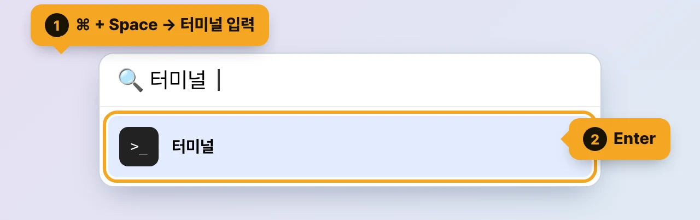
- 아래 상자의 복사 버튼을 누르고, 창에 ⌘ Command+V 로 붙여 넣은 뒤 Enter.
curl -fsSL https://claude.ai/install.sh | bash글자가 멈추면 설치 끝입니다. 창을 닫아 주세요.
3. 연습 폴더에서 Claude Code 켜기
Windows
- 바탕화면의 연습 폴더를 두 번 눌러 엽니다.
- 폴더 창 맨 위의 주소 표시줄(폴더 경로가 적힌 칸)을 한 번 누릅니다.
- 거기에 powershell 이라고 쓰고 Enter. 연습 폴더에서 창이 열립니다.
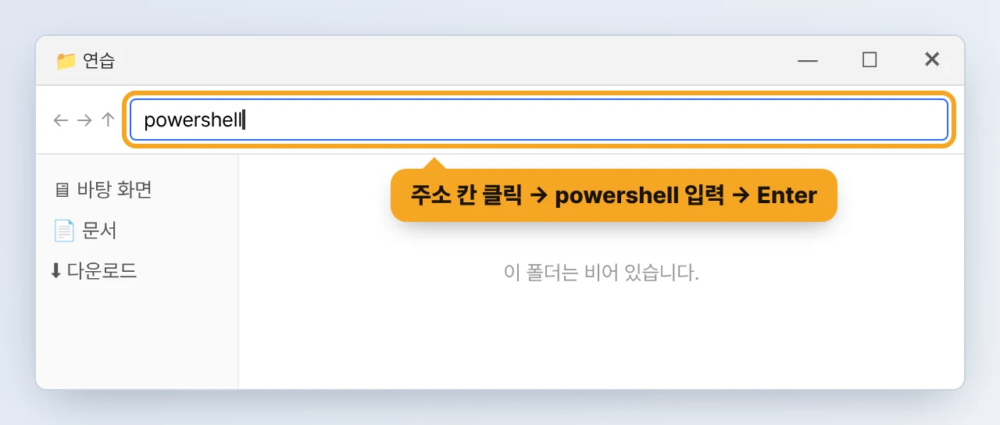
Mac
- 터미널을 다시 엽니다. (⌘ Command+Space → 터미널)
- cd 를 입력하고 한 칸 띄웁니다.
- 바탕화면의 연습 폴더를 마우스로 끌어다 터미널 창에 놓고 Enter.
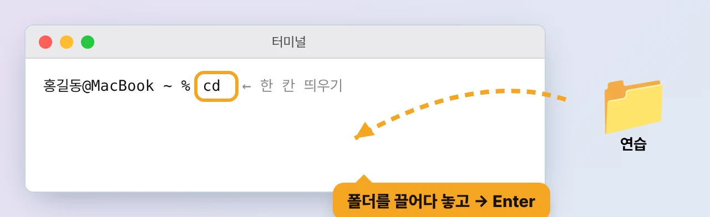
이제 창에 아래처럼 입력하고 Enter 를 누르면 Claude Code가 켜집니다.
claude4. 처음 한 번만 — 로그인
처음 켜면 영어로 몇 가지를 물어봅니다. 겁먹지 마세요. 키보드 ↑ ↓ 로 고르고 Enter 만 누르면 됩니다.
- 화면 색(테마)을 고르라고 하면 → 그냥 Enter
- 로그인 방법을 물으면 → Claude 구독 계정(Claude account with subscription) 을 고르고 Enter
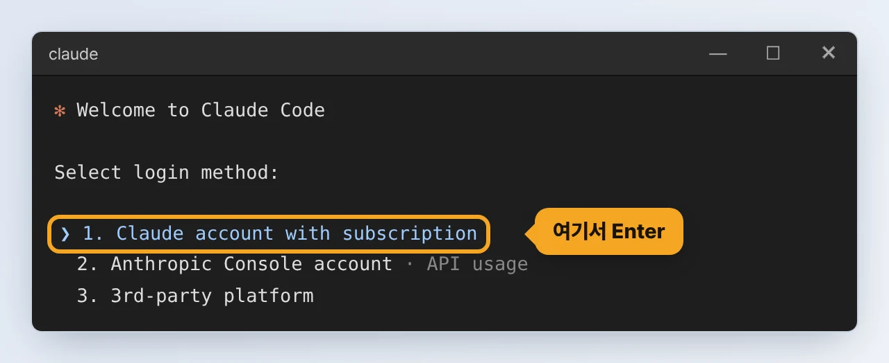
- 인터넷 창이 저절로 열리면 → 로그인하고 승인(Authorize) 버튼을 누릅니다. 다시 원래 창으로 돌아옵니다.
- 이 폴더를 믿느냐(trust)고 물으면 → Yes 를 고르고 Enter
입력 칸이 나오면 준비 끝입니다.
5. 첫 작업 시켜 보기
한국어로 그대로 입력하고 Enter 를 누르세요.
할일.txt 파일을 만들고 오늘 할 일 예시를 3개 적어줘Claude가 "이 파일을 만들어도 될까요?" 하고 영어로 물어봅니다. Yes 가 선택된 상태에서 Enter 를 누르면 됩니다.
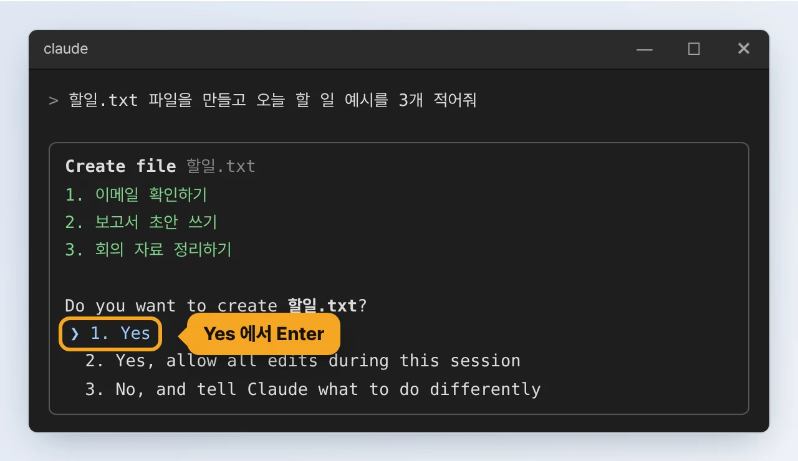
이제 바탕화면의 연습 폴더를 열어 보세요. 할일.txt 파일이 생겨 있습니다.
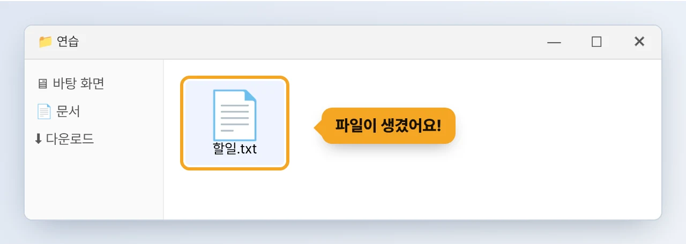
6. 끝내는 방법
/exit 를 입력하고 Enter, 또는 그냥 창을 닫으면 됩니다. 다음에 쓸 때는 3번부터 다시 하면 됩니다.
잘 안 될 때
| 이런 경우 | 이렇게 하세요 |
|---|---|
| "claude 용어가 … 인식되지 않습니다" (Mac: command not found) | 창을 모두 닫고 다시 열어 보세요. 그래도 안 되면 컴퓨터를 다시 시작하세요. |
| 로그인이 안 됨 | 유료(Pro 이상) 구독인지 확인하세요. 무료 계정은 쓸 수 없습니다. |
| 무엇을 해야 할지 모르겠음 | Claude에게 한국어로 "지금 뭘 하면 돼?" 하고 물어보세요. |
다음 글부터는 실무에 바로 쓰는 Claude Code 활용 방법을 하나씩, 오늘처럼 쉽게 소개합니다. 설치 방법은 바뀔 수 있으니 막히면 공식 설치 안내도 참고하세요.
※ The pictures in this guide are illustrations to make it easy to follow. Your screen may look a little different.
What is Claude Code?
An AI assistant you give jobs to in plain words. Ask it in your everyday words, like "tidy up the files in this folder" or "total this spreadsheet by month", and it creates and edits the files for you.
0. What you need first — a paid Claude account
- In your web browser, go to claude.ai and sign up.
- After signing in, subscribe to Pro or higher from the Upgrade menu.
1. Make a practice folder
To start, it's safest to practice in an empty folder with no files in it.
- Click the right mouse button on an empty spot of your desktop.
- Click New → Folder. (On a Mac, New Folder)
- Name the folder Practice.
2. Install (Windows)
On a Mac? Skip to Install (Mac) below.
- Press the ⊞ Windows key at the bottom left of the keyboard.
- Type powershell.
- Click Windows PowerShell in the list. A blue or black window opens.
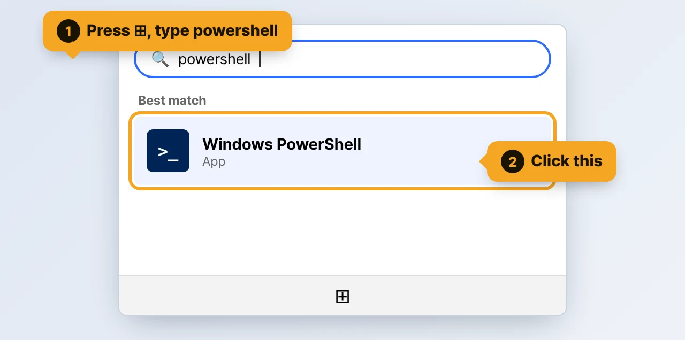
- Press the Copy button on the box below.
- Click the open window once, paste with Ctrl+V, then press Enter.
irm https://claude.ai/install.ps1 | iex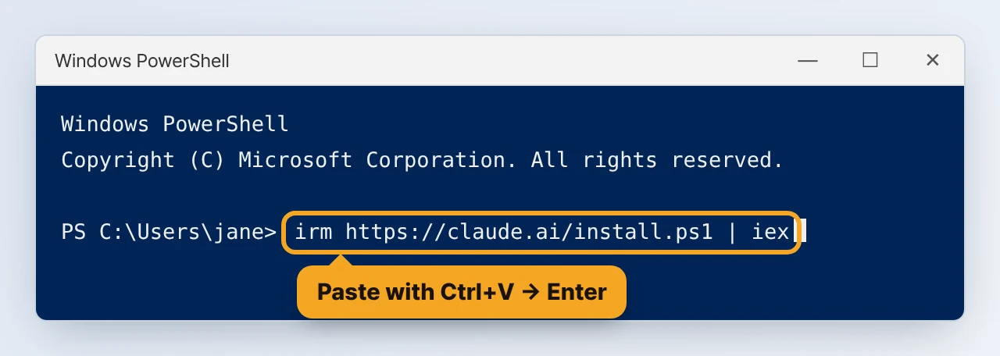
When the text has scrolled by for a while and stops, the install is done. Close the window.
2. Install (Mac)
- Press ⌘ Command+Space together.
- Type Terminal and press Enter. A text window opens.
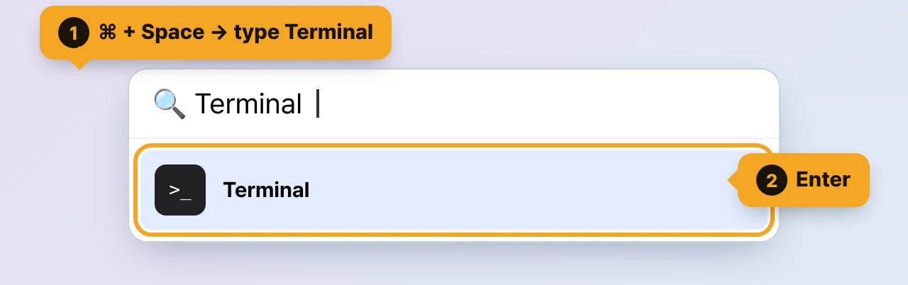
- Press the Copy button on the box below, paste into the window with ⌘ Command+V, then press Enter.
curl -fsSL https://claude.ai/install.sh | bashWhen the text stops, the install is done. Close the window.
3. Start Claude Code in the practice folder
Windows
- Double-click the Practice folder on your desktop to open it.
- Click the address bar at the top of the folder window (the box showing the folder path) once.
- Type powershell there and press Enter. A window opens in the practice folder.
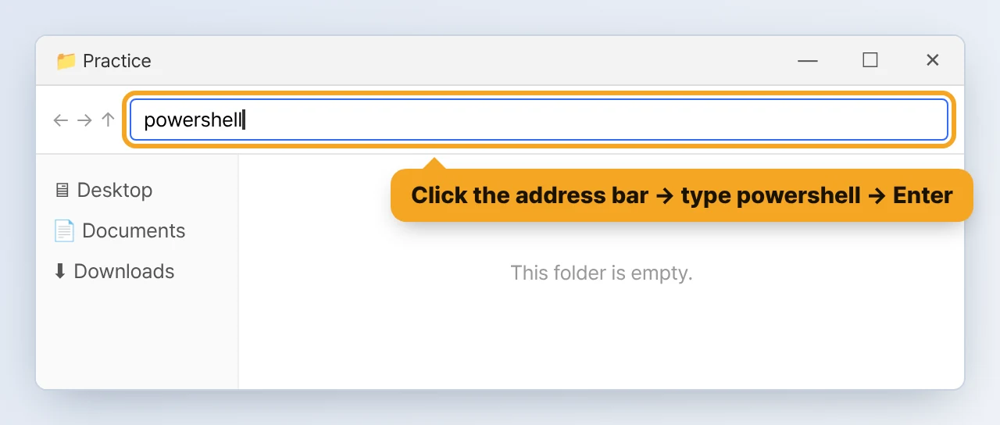
Mac
- Open Terminal again. (⌘ Command+Space → Terminal)
- Type cd and add one space.
- Drag the Practice folder from your desktop onto the Terminal window, then press Enter.
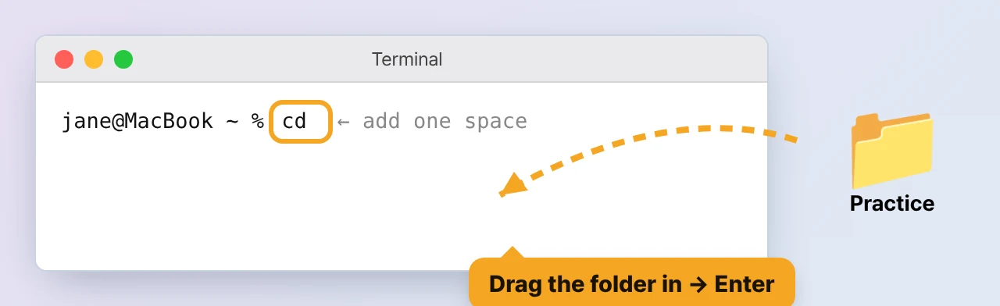
Now type the following in the window and press Enter to start Claude Code.
claude4. First time only — sign in
The first time, it asks a few questions. Don't worry. Choose with the ↑ ↓ keys and just press Enter.
- Asked to pick a color theme → just press Enter
- Asked for a login method → choose Claude account with subscription and press Enter
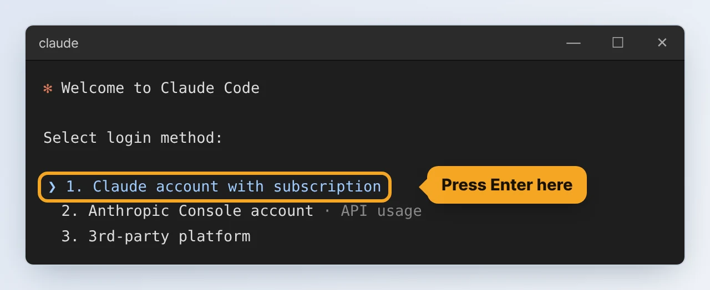
- When a browser opens by itself → sign in and click Authorize. Then come back to the original window.
- Asked whether you trust this folder → choose Yes and press Enter
When you see the box to type in, you're ready.
5. Give it a first task
Type this exactly and press Enter.
Create a file called todo.txt and write 3 example to-dos for todayClaude asks "May I create this file?" With Yes selected, press Enter.
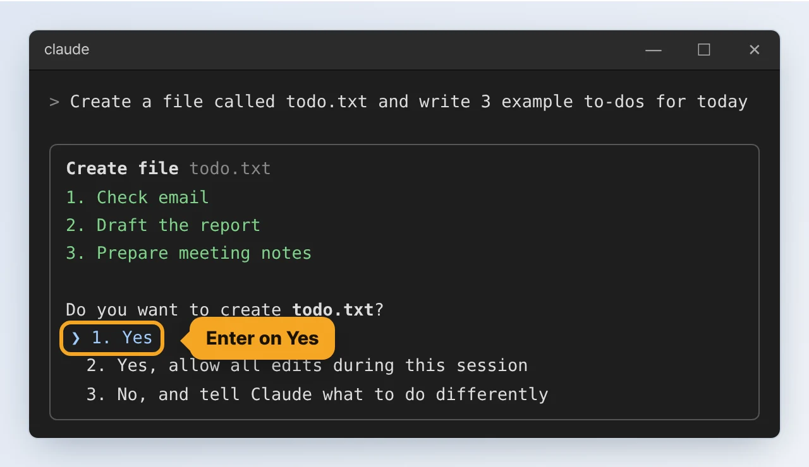
Now open the Practice folder on your desktop. The todo.txt file is there.

6. How to finish
Type /exit and press Enter, or just close the window. Next time, start again from step 3.
If something goes wrong
| If this happens | Do this |
|---|---|
| "'claude' is not recognized" (Mac: command not found) | Close all windows and open them again. If it still doesn't work, restart the computer. |
| Can't sign in | Check that you have a paid (Pro or higher) plan. Free accounts can't use it. |
| Not sure what to do | Ask Claude, "What should I do now?" |
In the following guides we'll introduce practical ways to use Claude Code for real work, one at a time, as simply as today. Install steps can change, so if you get stuck, also check the official setup guide.